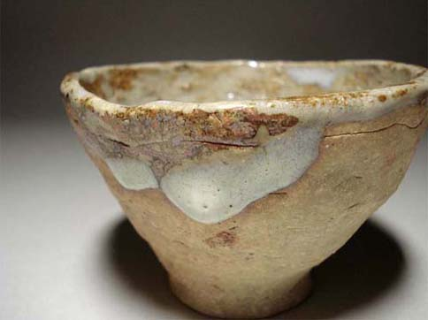
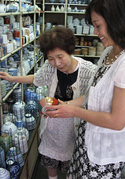

|
|
|---|
Mizuya, Savory Japan's online tableware galleryMizuya is a type of antique tansu (cabinet) used to store tableware, and literally means 'water house'. Mizuya specializes in fine Japanese antique, vintage and contemporary tableware, primarily ceramics and lacquer. We scoured Japan's antique shops to find good quality, beautiful and useful tableware for devotees of Japanese cuisine. We also have some nice chawan for students of the tea ceremony in stock as well. We will be adding to the gallery periodically, so please check back from time to time. Or, become a Savory Japan Facebook friend for regular updates on new items.  |
|

Above: Shopping for a contemporary ceramic bowl at one of Kyoto's restaurant supply shops. Left: A kosode (small sleeve) chaw |